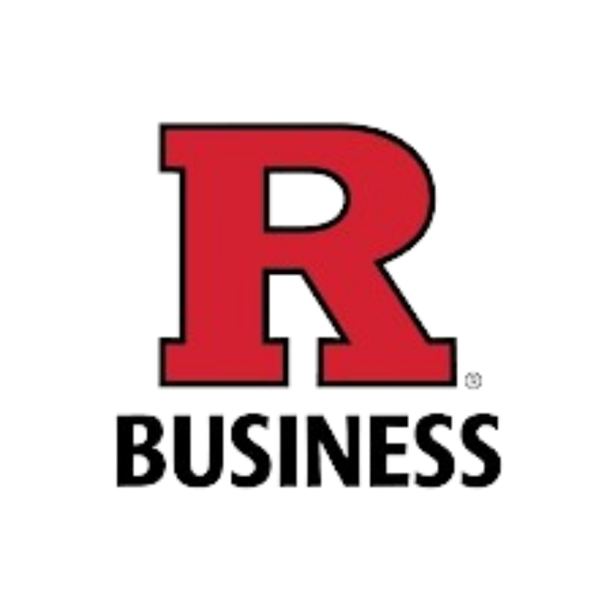

ABOUT ME
Results-oriented data/business analyst with a demonstrated history of elevating company revenue, optimizing operations, and providing actionable insights through advanced analytics tools and machine learning techniques. Passionate about uncovering insights through analytics and visualization. Eager to learn and teach, turning raw data into meaningful stories. Ready to share the power of data with others.

Research Assistant
Teaching Assistant
Aug 2022 - PresentGuided students in Tableau, emphasizing best practices.
Collaborated on real-world assessments, delivering precise feedback.
Graduated with a CGPA of 3.93/4.
Accomplished over 20 Data Analytics and Visaulization projects.
Tools: Python, SQL, Tableau, R
Honors: President - Student Association
Rutgers Business School
Masters in IT & AnalyticsResearch Assistant
Teaching Assistant
Aug 2022 - Present
Sid's Farm Pvt.Ltd.
Senior Data AnalystAssistant Operations Manager
Jun 2019 - Mar 2022
Dassault Systèmes
Data Analytics InternMay 2017 - Jul 2017
NIT, Calicut
Bachelors in Production EngineeringJul 2015 - May 2019